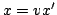
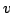
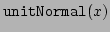
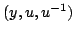
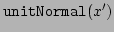
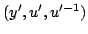
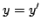

Usage
canonicalUnitNormal?
Signature
canonicalUnitNormal?: Boolean
Returns
Returns true if unitNormal is canonical in the following sense: if  for some unit  and  returns  and  returns , then .
See Also
unitNormal, unit?